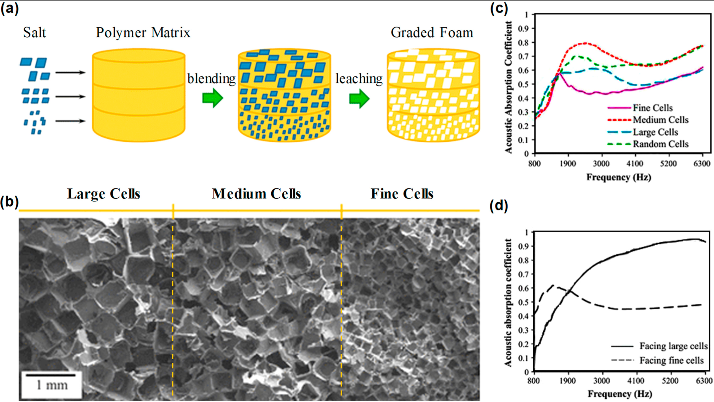
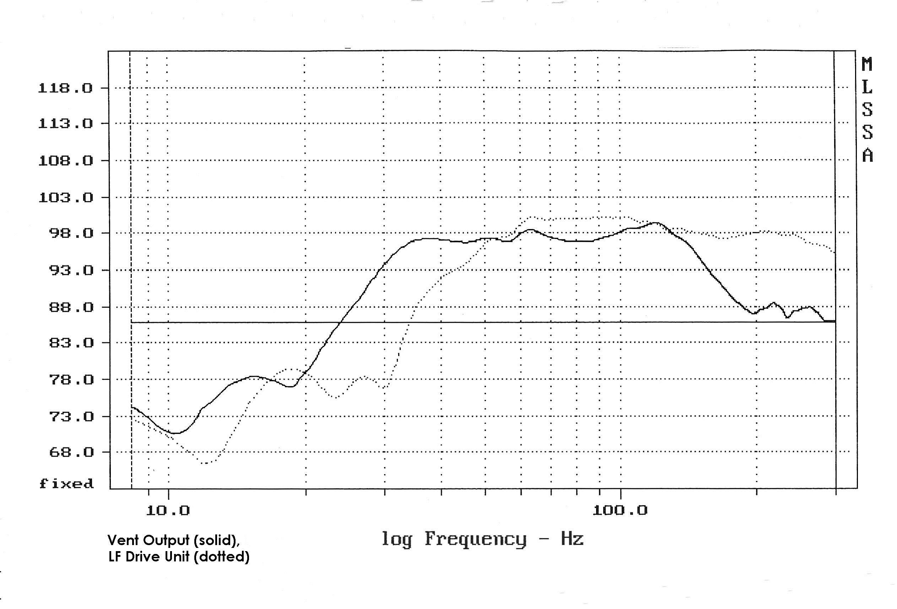

Most speakers used today in your house, cinemas, lecture theatres and nightclubs use simple designs where a speaker driver is mounted
in a sealed box or with basic ports at the back of the cabinet. What I will be discussing is a special type of speaker called Transmission
lines. These recycle the sound energy from the rear-facing side of the speaker and direct it along a long (normally folded) pathway in
the speaker enclosure thus changing the path difference of the sound waves (this is the difference in distance a wave travels to a point
compared to another). When tuned, it allows for a much better control of the energy produced by the speaker and improves the fidelity of
the sound or more specifically the bass frequency responsiveness (how well a speaker reproduces bass frequencies).
Introduction
Transmission line speakers are a design of speaker enclosures which aims to improve the bass response and sound quality of speaker systems.
There are various benefits for the speaker enclosure each allowing for different characteristics from other speaker enclosures.
One characteristic of transmission line speakers is that they act as an acoustic waveguide, this means that the casing is capable
of guiding and controlling passively the waves radiated out of the speaker, this is useful as manufacturers can more precisely control
and manage the sound produced by the speaker. This is especially used in the lower frequencies (Colloms Martin, Darlington Paul. 2005).
Figure 1: the transmission of waves through a waveguide. Hejie Lin, Turgay Bengisu & Zissimos P. Mourelatos, 2022.
The main problem with transmission line speakers is the complex design. For manufacturers to produce a high-performance
speaker, it takes careful consideration of the dimensions shape and dampening materials used. However, this may be seen as
worth doing for the increase in bass response and higher efficiency due to a larger amount of electrical power being
converted into sound.
Extended Bass Response
The idea of this design is that a normal bass driver/ speaker can produce frequencies which before would have been covered
by an external subwoofer. These frequencies can even go down to the infrasonic range (<17hz). This is done by delaying the
sound produced out the rear side of the driver and porting it out of the speaker enclosure when the wave is in phase
with the front wave.
Materials Used
The tl line speaker insides normally consist of a folded pathway which incorporates dampening or absorbent material this
is used to remove unwanted resonances which would interfere otherwise with the produced sound (Newell Philip Richard,
Holland Keith. 2007). Absorbent materials such as long wool are used, as these are good at reducing the energy of medium
to high-frequency sound waves. Furthermore, the padding used must reduce reflections inside the cabinet and the design of
the pathway further helps this by incorporating tapered walls and reflectors at 45 degrees (Hessam Alavi, 2016). This means
that the sound produced at the exit of the labyrinth is the wanted low frequencies. The tl lines work as acoustic waveguides
where the length of the pathway is calculated based on factors of the speaker itself. The tl line works as an acoustic
waveguide making sure the sound waves released at the open end are in phase with the sound waves produced by the front
side of the speaker.

Figure 2: This figure shows how the size of cells in a polymer matrix affects sound absorption.
Leitao Cao, Qiuxia Fu, Yang Si, Bin Ding, Jianyong Yu 2018.
The Design Of the Transmission Line Speakers
The length of the transmission line is calculated based on resonance. This means the length is set to the fundamental frequency
of the loudspeaker, designers will normally use a length which is 1/2y of that. This is because the sound produced out the
rear side of the speaker is exactly 180 degrees out of phase therefore a completely destructive wave to the outputted sound. As the
tl shifts the wave 180 degrees back it is now completely in phase. Now that it’s in phase and tuned to the fundamental frequency
there is an increase in resonance of wanted frequencies increasing the output level of our wanted bass. This is like someone on
a swing, to make the swing move higher (increase the amplitude) you need to swing your legs at the right speed/ frequency, in
other words, the fundamental frequency of that system. Otherwise, you find yourself not increasing your height or by swinging out
of phase (e.g. legs out whilst going backwards) you reduce your height. This is the same as transmission line speakers.
Analysis
To compare the difference between the transmission line and normal ported or enclosed speaker designs we use something called frequency
responsiveness which is the amplitude in decibels (dB) for a given frequency (Newell Philip Richard, Holland Keith. 2007). Here I will
show the difference between types of speakers and the difference between the port of the TL and the driver.

Figure 3: this diagram shows the sound frequency at the port (solid line) and the driver (dotted) Newell Philip Richard,
Holland Keith.2007
The diagram shows us how at the left side of the graph towards the 10 hz the solid line or the port the dB for these frequencies
is higher (this being the bass frequencies). On the right side of the graph, the dotted line has a better frequency response,
this is what we expect because of the dampening material used inside the pathway to reduce the higher frequencies as this produces
those unwanted resonances which make the sound muddy.
Conclusion
Whilst transmission line speakers are shown to perform better than normal ported speakers this is at the cost of a complex design
process which can have expensive R&D therefore leading to increased costs for the consumer. Therefore, most producers focus on
the quality of the driver and consumers will purchase sub-woofers ( a speaker with a large diaphragm driver specifically for bass
frequencies) for their sound system to get those sub-infrasonic and immersive bass frequencies. However transmission line
speakers offer the whole package in one, many TL speakers include multiple drivers (bass, mid and tweeters) and achieve the sub-infrasonic
and deep bass frequencies with the transmission line making them superior but at a higher cost.